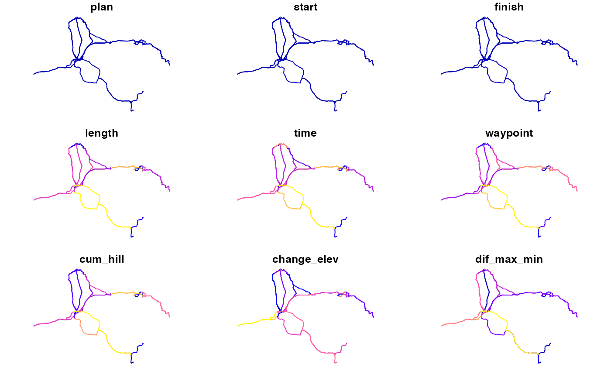

This data was obtained using code shown in the introductory pct package vignette.
names(wight_routes_30)#> [1] "plan" "start" "finish" "length" "time" #> [6] "waypoint" "cum_hill" "change_elev" "dif_max_min" "up_tot" #> [11] "down_tot" "av_incline" "co2_saving" "calories" "busyness" #> [16] "error" "id" "geometry"head(wight_routes_30)#> Simple feature collection with 6 features and 17 fields #> geometry type: LINESTRING #> dimension: XY #> bbox: xmin: -1.31005 ymin: 50.69411 xmax: -1.28117 ymax: 50.75952 #> epsg (SRID): 4326 #> proj4string: +proj=longlat +datum=WGS84 +no_defs #> plan start finish length time waypoint cum_hill change_elev dif_max_min #> 99 1 1 1 1852 534 77 61 -11 20 #> 101 1 1 1 2349 586 99 46 -2 21 #> 7 1 1 1 7480 1829 189 139 1 20 #> 2 1 1 1 1942 2619 104 70 20 40 #> 1 1 1 1 1103 444 44 40 32 33 #> 18 1 1 1 3057 2795 145 108 -12 53 #> up_tot down_tot av_incline co2_saving calories busyness error id #> 99 25 36 0.03293737 345 36 6345 NA 99 #> 101 22 24 0.01958280 438 43 4116 NA 101 #> 7 70 69 0.01858289 1394 124 14372 NA 7 #> 2 45 25 0.03604531 362 59 5701 NA 2 #> 1 36 4 0.03626473 206 45 3424 NA 1 #> 18 48 60 0.03532875 570 67 6826 NA 18 #> geometry #> 99 LINESTRING (-1.28442 50.703... #> 101 LINESTRING (-1.28442 50.703... #> 7 LINESTRING (-1.29757 50.757... #> 2 LINESTRING (-1.29757 50.757... #> 1 LINESTRING (-1.29757 50.757... #> 18 LINESTRING (-1.31005 50.753...plot(wight_routes_30)#> Warning: plotting the first 9 out of 17 attributes; use max.plot = 17 to plot all